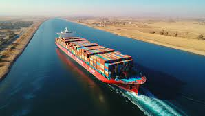
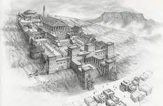
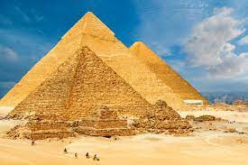
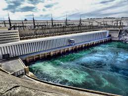
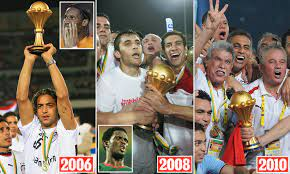

The Great Egyptian Achievements that No Other Can Compare to
The Suez Canal

The Suez Canal is an artificial sea-level waterway in Egypt,
connecting the Mediterranean Sea to the Red Sea through the Isthmus of Suez and dividing Africa and Asia.
The 193.30-kilometre-long canal is a key trade route between Europe and Asia.
In 1858, French diplomat Ferdinand de Lesseps formed the Compagnie de Suez for the express
purpose of building the canal. Construction of the canal lasted from 1859 to 1869.
The canal officially opened on 17 November 1869.
It offers vessels a direct route between the North Atlantic and northern Indian oceans
via the Mediterranean Sea and the Red Sea, avoiding the South Atlantic and southern Indian oceans
and reducing the journey distance from the Arabian Sea to London by approximately 8,900 kilometres,
to 10 days at 20 knots (37 km/h) or 8 days at 24 knots (44 km/h)
The Library of Alexandria

The Great Library of Alexandria in Alexandria, Egypt, was one of the largest
and most significant libraries of the ancient world. The library was part of a larger research institution
called the Mouseion, which was dedicated to the Muses, the nine goddesses of the arts.
The idea of a universal library in Alexandria may have been proposed by Demetrius of Phalerum,
an exiled Athenian statesman living in Alexandria, to Ptolemy I Soter, who may have established plans for
the Library, but the Library itself was probably not built until the reign of his son Ptolemy II Philadelphus.
The Library quickly acquired many papyrus scrolls, owing largely to the Ptolemaic kings' aggressive
and well-funded policies for procuring texts.
It is unknown precisely how many scrolls were housed at any given time,
but estimates range from 40,000 to 400,000 at its height.
Giza Pyramid Complex

The Giza pyramid complex (also called the Giza necropolis) in Egypt is home to the Great Pyramid,
the Pyramid of Khafre, and the Pyramid of Menkaure, along with their associated pyramid complexes
and the Great Sphinx. All were built during the Fourth Dynasty of the Old Kingdom of ancient Egypt,
between c. 2600 – c. 2500 BC. The site also includes several temples, cemeteries,
and the remains of a workers' village.
The site is at the edge of the Western Desert, approximately 9 km west of the Nile River
in the city of Giza, and about 13 km southwest of the city centre of Cairo.
It forms the northernmost part of the 16,000 ha (160 km2) Pyramid Fields of the Memphis
and its Necropolis UNESCO World Heritage Site, inscribed in 1979. The pyramid fields include the Abusir,
Saqqara, and Dahshur pyramid complexes, which were all built in the vicinity of Egypt's ancient capital of
Memphis. Further Old Kingdom pyramid fields were located at the sites Abu Rawash, Zawyet El Aryan,
and Meidum.
Aswan High Dam

The Aswan Dam, or more specifically since the 1980s, the Aswan High Dam,
is one of the world's largest embankment dams,
which was built across the Nile in Aswan, Egypt, between 1960 and 1970.
When it was completed, it was the tallest earthen dam in the world, eclipsing the United States' Chatuge Dam.
The dam created a reservoir named Lake Nasser. Its significance largely upstaged the previous
Aswan Low Dam initially completed in 1902 downstream. Based on the success of the Low Dam,
then at its maximum utilization, construction of the High Dam became a key objective of the new regime,
the Free Officers movement of 1952; with its ability to better control flooding, provide increased water storage
for irrigation and generate hydroelectricity, the dam was seen as pivotal to Egypt's planned industrialization.
Like the earlier implementation, the High Dam has had a significant effect on the economy and culture of Egypt
Winning the Afican Cup of Nations 3 times Consecutively

The Egyptian national football team made history by winning the Africa Cup of Nations three consecutive times
in 2006, 2008, and 2010. This unparalleled achievement solidified Egypt's dominance in African football
and showcased the country's footballing prowess. The journey began in 2006 when Egypt hosted the tournament
and emerged victorious under the leadership of coach Hassan Shehata. The team triumphed over Ivory Coast
in a dramatic final that ended in a penalty shootout. Building on this success, Egypt continued their winning streak
in 2008 in Ghana, where they defeated Cameroon 1-0 in the final, thanks to a decisive goal
by Mohamed Aboutrika. The Pharaohs completed their historic hat-trick in 2010 in Angola,
once again defeating Ghana 1-0 in the final with a late goal by Mohamed Nagy "Gedo."
This remarkable period in Egyptian football was characterized by a strong defensive unit,
exceptional midfield control, and clinical finishing.
Key players such as Ahmed Hassan, Essam El-Hadary, and Mohamed Aboutrika played pivotal roles in the team's success.
Egypt's three consecutive CAF titles remain a record,
underscoring the nation's footballing excellence and their significant impact on the African football landscape.